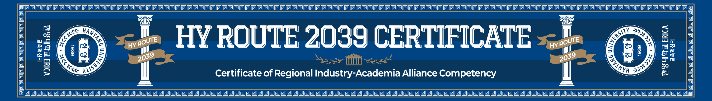

R
Respond
반응
현장의 문제와 변화에 발빠르게 반응하고
HANYANG UNIVERSITY ERICA · CERTIFICATE OF REGIONAL INDUSTRY-ACADEMIA ALLIANCE COMPETENCY
한양대학교 ERICA | 교육혁신처
ERICA 브랜드 산학협력 — 대학생활 동안 쌓아온 귀중한 실무경험과 현장 노하우를 공식 인증받는 5단계 역량 성장 로드맵
ROUTE 다섯 글자의 의미
단순한 졸업 스펙을 넘어
한양 개교 100주년을 향한 5단계 성장 여정
반응
현장의 문제와 변화에 발빠르게 반응하고
주도
스스로 주도하여 성장의 주체가 되며
연결
다양한 영역과 협력하여 시너지를 창출
도전
한계에 도전하며 경험을 넓히고
체화
실무 역량을 완벽히 체화하는 인재
5단계 인증 등급
ROUTE-R → ROUTE-E 다섯 등급,
ROUTE-E 가 최상위 단계
BASIC
60–65
60 이상 65 미만
조건 1 · 2 · 6각 1개 이상 필수 이수
GROWING
65–70
65 이상 70 미만
조건 1 · 2 · 6각 1개 이상 필수 이수
CONNECTED
70–75
70 이상 75 미만
조건 1 · 2 · 6각 1개 이상 필수 이수
CHALLENGED
75–80
75 이상 80 미만
조건 1 · 2 · 6각 1개 이상 필수 이수
TOP TIER
80 +
80 이상 · 최상위
조건 1 · 2 · 3 · 6각 1개 이상 필수 이수
인증 조건 및 역량 평가 항목
교과 + 비교과 활동을
종합하여 산출
| 조건 | 평가 항목 | 배점 | 비고 |
|---|---|---|---|
| 조건 1 | IC-PBL (M) 이수 | 20 점 | 이수 개수에 따라 차등 부여 · 4개 이상시 만점 |
| 조건 2 | 현장실습 이수 | 35 점 | 이수 개수에 따라 차등 부여 · 4개 이상시 만점 |
| 조건 3 | 캡스톤디자인 교과목 이수 | 25 점 | 이수 개수에 따라 차등 부여 · 4개 이상시 만점 |
| 조건 4 | 기타 산학협력 영역 | 10 점 | 1개 이상 이수시 만점 |
| 조건 5 | 창업대체 학기제 | 10 점 | 1개 이상 이수시 만점 |
| 조건 6 | 비교과 프로그램 (하이루이) 이수하이루이 이수완료 기준 적용 | 20 점 | 2건 이하 10점 · 5건 이하 14점 · 9건 이하 17점 · 10건 이상 20점 (만점) |
총점 산출 공식 · TOTAL SCORE
총점 = (조건 1~5 점수 합계) × 80% + 조건 6 점수(최대 100점)
수여 혜택 · REWARD
공식 인증서 + HY-ROUTE 2039 인증 머플러
